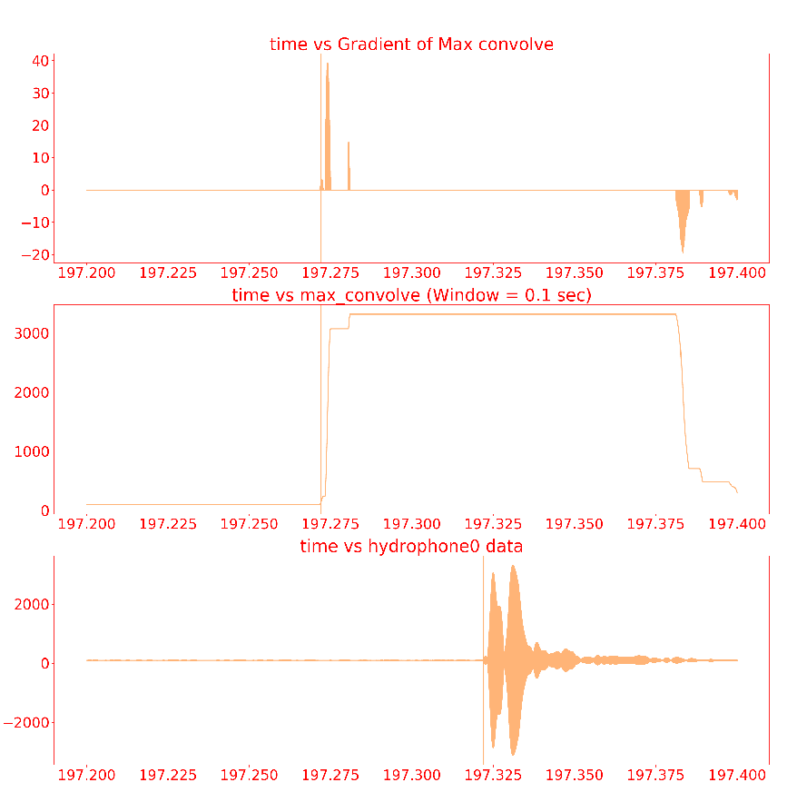
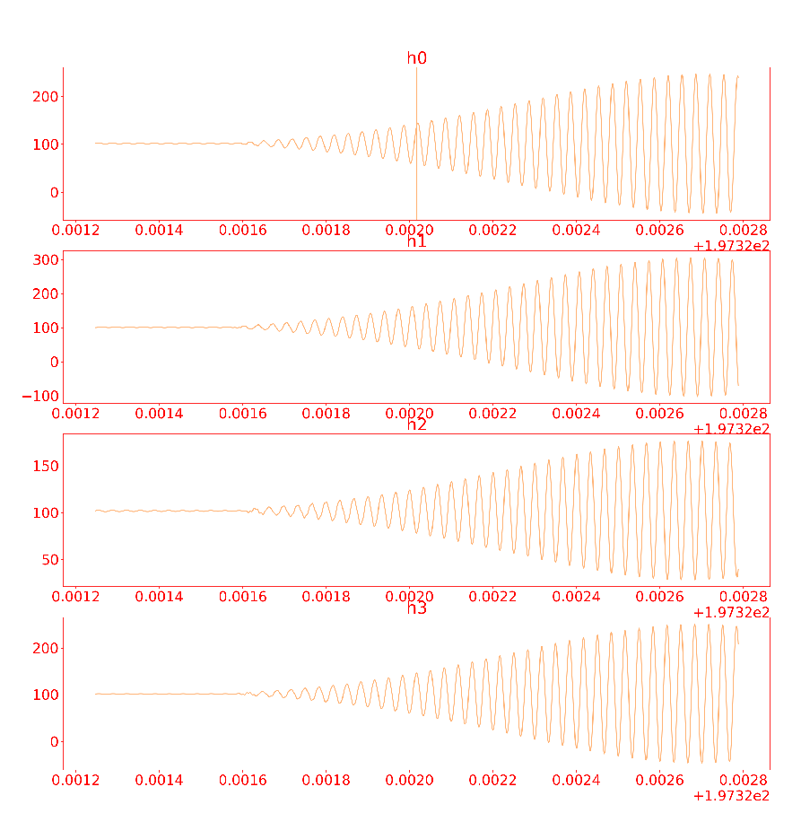
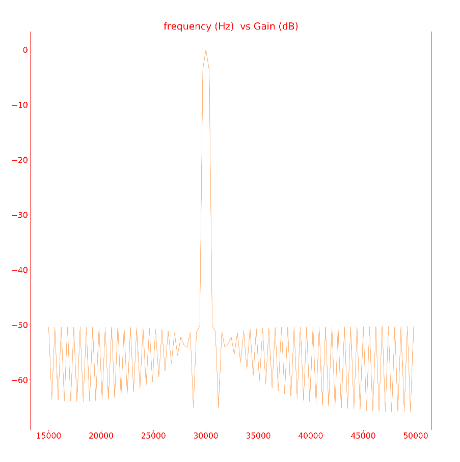
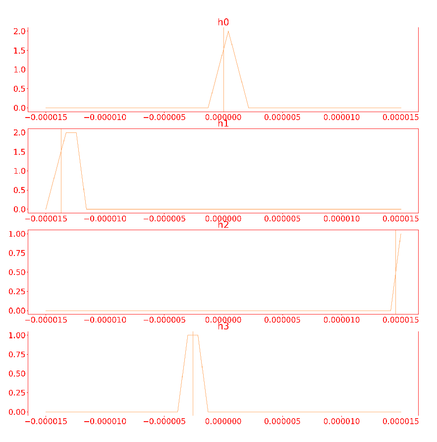
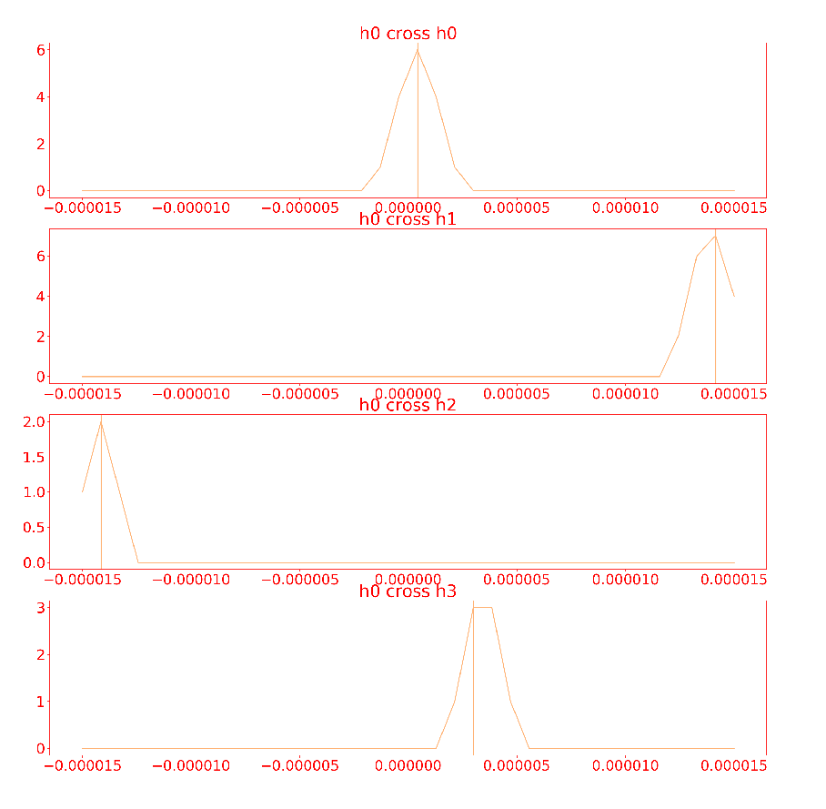

Passive sonar¶
How to Use¶
Launch¶
roslaunch subjugator_launch passive_sonar.launch
Debugging¶
To Play Back a File¶
Download oof.bin
roslaunch subjugator_launch passive_sonar.launch environment:=file
To step through a file¶
rosrun mil_tools stream_tcp_dump ~/Downloads/oof.bin --batch_size=960000 --advance_on_arrow=True
To Play back a file at real speed¶
rosrun mil_tools stream_tcp_dump ~/Downloads/oof.bin --batch_size=960000 --rate=10
Visualize Data in the Pipeline¶
This pipeline makes use of the mil_common/utils/mil_tools/mil_ros_tools/plotter.py utility to plot batches of data over on ROS Topics as CV2 images at most points in the processiong pipeline.
To view all points of the triggering pipeline¶
(raw, max convolution, gradient) that caused the most recent trigger (only hydrophone 0), look at /hydrophones/triggering/trigger_debug
It should look something like this (30kHz):
To view raw samples from all hydrophones around the triggering time¶
look at /hydrophones/triggering/sample_at_trigger_debug
It should look something like this (30kHz):
To view the frequency response of the bandpass filter¶
open /hydrophones/triggering/filter_debug in rviz. Then, in a new panel rosservice call /hydrophones/triggering/filter_debug_trigger "{}" Go look at the rviz and see the frequency response of the filter cropped for our general frequency range.
It should look something like this (30kHz):
To view the signals sent to the ping locator node¶
(and vertical lines at the trigger times) view /hydrophones/ping_locator/samples_debug
NOTE:The Vertical lines are where triggering is detected on each hydrophone channel.
It should look something like this (90deg to the right):
To view the cross correlations between the hydrophones¶
(and therefore the time delays) look at /hydrophones/ping_locator/cross_correlation_debug
NOTE:The Vertical lines are the max of the cross correleation and therefore the negative of the time delays.
It should look something like this (90deg to the right):
Configuration¶
All parameters that are expected to be changed in tuining are ROS Params initialized in passive_sonar.yaml
To make a custom configation¶
roscd subjugator_launchcp config/passive_sonar.yaml config/my_passive_sonar.yamlrosed my_passive_sonar.yamlchange whatever parameters you like
roslaunch subjugator_launch passive_sonar.launch config_file:=my_passive_sonar.yaml
To change the configuration at runtime¶
set whatever param you want to change ie:
rosparam set /hydrophones/triggering/target_frequency 25000call the reset service ie:
rosservice call /hydrophones/triggering/reset "{}"
Testing ROS bridge¶
Download example TCP dump,
Run ROS bridge
rosrun mil_passive_sonar sylphase_sonar_ros_bridge _port:=10001 _ip:=127.0.0.1Either stream a TCP dump or run the driver on a real robot * Stream TCP dump
rosrun mil_tools stream_tcp_dump ~/Downloads/oof.bin --port=10001 --ip 127.0.0.1* On Sub8 run the actual driver(cd ~/.mil/sylphase-sonar/; ./driver/publish 10001)Make sure samples are being published
rostopic echo /samples
How Does It Work?¶
![digraph passive_sonar {
"Forrest's Hydrophone Board" ->
"Forrest's Driver" ->
"TCP Port" ->
"Slyphase Ros Bridge"->
"ROS Topic (/hydrophones/samples)" ->
wait_for_new_data_triggering;
subgraph cluster_triggering
{
style=filled;
color=lightgrey;
label = "Triggering ROS \nNode";
labeljust="l";
"Gradient(Hydrophone 0) >\nTheshold" [shape=diamond];
wait_for_new_data_triggering[label="Wait For New Data"];
wait_for_new_data_triggering ->
"Raw Hydrophone Data"->
"Band pass the data for target frequency"->
"Max Convolution of Data"->
"Gradient of Max Convolution"->
"Gradient(Hydrophone 0) >\nTheshold";
"Gradient(Hydrophone 0) >\nTheshold":e ->
wait_for_new_data_triggering:e [label="NO"];
"Gradient(Hydrophone 0) >\nTheshold":s ->
"Crop Gradient(All Hydrophones)\n around where its > threshold":n [label="YES"];
"Crop Gradient(All Hydrophones)\n around where its > threshold" ->
"Publish Gradient (All Hydrophones)\n to ROS Topic\n (/hydrophones/pings)";
}
"Publish Gradient (All Hydrophones)\n to ROS Topic\n (/hydrophones/pings)"->
wait_for_new_data_ping_locator;
"Hydrophone Visualization";
subgraph cluster_ping_locator
{
style=filled;
color=lightgrey;
label = "Ping Locator ROS\nNode";
labeljust="l";
wait_for_new_data_ping_locator[label="Wait For New Data"];
wait_for_new_data_ping_locator ->
"Cross Correlate the Hydrophones" ->
"Get time Deltas from \nCross Correlation (Time delay)" ->
"Calculate the unit vector\n of the direction of the\n ping from Deltas (utils.py calcualte_dir_pinger)" ->
"publish the vector on ROS\n Topic (/hydrophones/direction)" ->
wait_for_new_data_ping_locator:e;
}
"publish the vector on ROS\n Topic (/hydrophones/direction)" ->
"Hydrophone Visualization";
"Hydrophone Visualization" ->
"publish ROS Topic (/hydrophones/direction_marker)"
}](../../_images/graphviz-005c34009679b50a0d66b2865396f744120b5079.png)